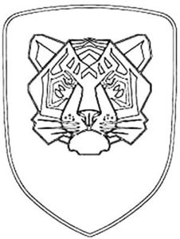

Trade Mark Journal No.2025/017 25 April 2025
WO0000001837332 (4,12,16,18,22,25,27,35,37)
Office of origin: European Union Intellectual Property Office (EUIPO)
Date of International Registration:29 October 2024
Date of designation in the UK:
29 October 2024

International priority date claimed: 8 August 2024
(European Union Intellectual Property Office (EUIPO))
(019065622)
- Class 4
- Lubricants; motor vehicle lubricants; lubricating oils for automotive vehicle engines; engine oil for cars; non-chemical motor oil additives; lubrication grease for vehicles; car greases; automobile fuels; liquefied petroleum gas for household and industrial purposes, and for motor vehicles; anti-seize substances [oils]; automotive greases; fuels (including motor spirit); liquefied petroleum gases to be used for domestic purposes; liquefied petroleum gases to be used for industrial purposes; liquefied petroleum gases to be used in motor vehicles; industrial oils and greases, lubricants; mineral oils and greases for industrial purposes [not for fuel]; candles.
- Class 12
- Vehicles; electric vehicles; hybrid vehicles; apparatus for locomotion by land; apparatus for locomotion by air; apparatus for locomotion by water; parts and fittings for vehicles; parts and fittings for land vehicles; parts and fittings for air and space vehicles; parts and fittings for water vehicles; automobiles and structural parts therefor; automobiles and structural parts therefor; structural parts for aircraft; structural parts for boats; cars; automotive vehicles; sports cars; motor racing cars; automotive vehicles; robotic cars; hybrid cars; robotic cars; upholstery for automobiles; automobile chassis; hardtops [roofs] for vehicles; automobile bodies; coachwork for motor vehicles; automobile engines; car tidies; horns for motor cars; windscreen wipers for motor cars; automobile tyres; steering wheels for vehicles; car seats; automobile roof racks; anti-theft devices for vehicles; spray prevention flaps for vehicles; automobile wheels; automobile engines; car transporters; bumpers for automobiles; shock absorbers for automobiles; automobile tyres; windscreens for motor cars; electric motors for motor cars; rear car windows; spoilers for automotive vehicles; car seats; automobile roof containers; alarm systems for cars; head-rests for car seats; wheel rims [for automobiles]; wheel rims [for automobiles]; automobile door handles; car seat tidies; direction signals for automobiles; air pumps for automobiles; suspension systems for automobiles; safety seats for vehicles; brake pads for automobiles; interior trim parts of automobiles; automatic gearboxes for motor cars; pet booster seats for automobiles; automobile chains [anti-skid for wheels]; gear shifts for automobiles; air bags [safety devices for automobiles]; seat covers [shaped] for use in automobiles; trailers [vehicles]; anti-theft alarms for vehicles; anti-theft locks for use on automobile steering wheels; steering wheel spinners for automobiles; horns for vehicles; anti-theft devices for automobiles; drones; sun visors for automobiles; doors for vehicles; vehicle seats; head-rests for vehicle seats; anti-dazzle devices for vehicles; brake calipers for vehicles; spray prevention flaps for vehicles; vehicle door panels; clutches for land vehicles; covers for vehicle steering wheels; transmission shafts for land vehicles; security harness for vehicle seats; transmission belts for land vehicles; reversing alarms for vehicles; fuel tanks for vehicles; mirrors for vehicles; steering wheels [vehicle parts]; suspension systems for land vehicles; child booster cushions for vehicle seats; child restraints for vehicle seats; safety seats for children, for vehicles; sun-blinds adapted for automobiles; axles for vehicles; spare wheel covers; hub caps; brake linings for land vehicles; propulsion mechanisms for land vehicles; transmission mechanisms for land vehicles; air pumps [vehicle accessories]; rearview mirrors; racing seats for automobiles; engines for racing cars; motor racing cars; safety harnesses for auto racing; commercial vehicles; tyres for commercial vehicles; commercial alarm systems for vehicles; trolleys.
- Class 16
- Planners [printed matter]; printed tickets; printed calendars; printed manuals; printed matter, and stationery and educational supplies; stationery; office stationery; pens; pencils; printed stationery; books; guides [books]; educational books; coffee table books; binding materials for books and papers; books, magazines [periodicals], newspapers and printed matter; magazines [periodicals]; periodicals; journals; printed instructional, educational and teaching materials; printed periodicals; printed teaching activity guides; printed instructional materials; training handbooks; paper and cardboard; gums [adhesives] for stationery or household purposes; vehicle bumper stickers; instructional and teaching material; printed publications; educational publications; educational publications; printed publications; periodicals; packing bags of paper; bags made of plastics for packaging; containers of cardboard [wrapping]; paper envelopes for packaging; cardboard packaging boxes in collapsible form; bags [envelopes, pouches] of paper or plastics, for packaging; book covers; photographs [printed]; printers' type, printing blocks; binding materials for books and papers; trading cards relating to sport.
- Class 18
- Leather and imitation leather; leather and imitations of leather; daypacks; rucksacks, travel bags; sling bags; sports packs; school knapsacks; book bags, bags for sports, bumbags, wallets and handbags; business card cases; business cards cases, namely wallets and cardcases; credit-card holders; credit card cases and holders; key bags; key cases; key cases of leather or imitation leather; leather and imitation leather bags; leather bags and wallets; leather bags, suitcases and wallets; attache cases made of leather; key cases made of leather; credit card holders made of leather; leather credit card wallets; handbags made of leather; leather purses; leather straps; luggage tags; name card cases; pouches for holding keys; pouches made from imitation leather; small purses; wallets and wallet inserts; wallets including card holders; wallets made of leather or other materials; suitcases; suitcases; attaché cases; briefcases [leather goods]; attaché cases; handbags; travel baggage; card cases of leather; leather credit card holders; conference folders made of leather; make-up bags, not fitted; bags for sports; athletics bags; evening bags and shoulder bags for women; shopping bags; school book bags; travel garment covers; shoe carriers for travel; beach bags; nappy bags; baby carriers worn on the body; travelling cases; canvas bags; overnight bags; school bags; formal handbags; leather; chests and boxes of leather; briefcases [leather goods]; straps made of leather; umbrellas; leather leashes; card wallets [leatherware]; purses; credit-card holders; cosmetic purses; cosmetic purses; cosmetic cases sold empty; cosmetic cases sold empty; cosmetic bags sold empty; make-up boxes; make-up bags sold empty; pouches for holding make-up, keys and other personal items; luggage, bags, wallets and carrying bags; vanity cases (not fitted); bags for sports clothing; bags, travelling bags, haversacks, umbrellas; multipurpose sports bags; briefcases; card wallets [leatherware]; pocket wallets; purses; travelling bags; handbags; rucksacks; school knapsacks; key cases of leather or imitations of leather; key cases; bags; work bags; leather for harnesses; imitation leather; animal skins, hides; trunks and suitcases; luggage; umbrellas; parasols; walking staffs; whips; harnesses; saddlery; shoulder belts; haversacks; trolley duffels; gym bags.
- Class 22
- Padding and stuffing materials; padding materials, not of rubber, plastics, paper or cardboard; feathers for stuffing upholstery; padding materials, not of rubber, plastics, paper or cardboard; waterproof covering sheets [tarpaulins]; covers in the nature of tarpaulins for vehicles; vehicle covers, not fitted; vehicle covers, not fitted; car towing ropes; tie-down cords for vehicles; protective shrouds for vehicles [not shaped]; cords and twines made of natural or artificial textile fibres, paper or plastics; devices in form of elasticated rope for securing goods on vehicles; tow ropes for automobiles; covers [not shaped] for motor cars; tarpaulins, awnings, tents, and protective shrouds for vehicles [not shaped].
- Class 25
- Clothing; clothing for men, women, and children; dresses; evening wear; coats; leather dresses; shirts; skirts; tops [clothing]; raincoats; overcoats; waist belts; shoulder straps for clothing; blouses; dresses; tailleurs; jackets [clothing]; cagoules; shawls; trousers; overcoats; denim jeans; cloaks; parkas; undershirts; cardigans; dressing gowns; swimwear; bathing suits; dressing gowns; shawls; cravats; neck ties; sweat shirts; maillots [hosiery]; polo shirts; short trousers; jerseys [clothing]; sweaters; underwear; nighties; pyjamas; stockings; socks; ladies socks; vest tops; corsets [underclothing]; suspenders for stockings; boxer shorts; brassieres; knitted underwear; slips [underclothing]; hats; berets; visors [headwear]; ready-made linings [parts of clothing]; gloves [clothing]; scarves; stoles; down jackets; tracksuits; fingerless gloves; linen clothing; nightwear; teddies [underclothing]; nightwear; men's socks; socks and stockings; tights; foulards [clothing articles]; bandanas [neckerchiefs]; shawls and headscarves; lounging robes; nighties; nightwear; warm-up jackets; sports jackets; sleeveless jackets; parkas; coats, trousers and waistcoats for men and women; ski jackets; neck scarves [mufflers]; mufflers [clothing]; ski trousers; ski hats; snow suits; ski boots; ski gloves; sportswear; mountaineering boots; footwear; shoes; boots; sandals; slippers; deck shoes; belts [clothing]; slippers; overshoes; galoshes; clogs; soles for footwear; footwear uppers; half-boots; espadrilles; bath sandals; motorists' clothing; sportswear incorporating digital sensors; uniforms.
- Class 27
- Carpets, rugs, mats and matting, linoleum and other materials for covering existing floors; non-textile wall coverings; carpets for automobiles; vehicle mats and carpets; mats for vehicles [not shaped]; carpets for automobiles; carpets for automobiles.
- Class 35
- Retail services in relation to vehicles; retail or wholesale services relating to two-wheeled vehicles; advertising, promotion or marketing relating to vehicles; wholesale services in relation to vehicles; advertising automobiles for sale by means of the Internet; providing information via the Internet relating to the sale of automobiles; retail services relating to automobile accessories; retail services relating to automobile parts; retail or wholesale services in relation to cars; dissemination of advertisements via the Internet; advertising and advertising matter provided via television, radio or post; advertising and marketing services provided by means of social media; preparation of advertising campaigns; promotion of goods and services through sponsorship of international sports events; providing of business and marketing information; marketing; presentation of goods on communication media, for retail purposes; vehicular registration and title transfer; trade activity management; assistance and advice regarding business organisation and management; sales promotions at point of purchase or sale, for others; providing assistance in the management of franchised businesses; business advice and consultancy relating to franchising; business management relating to franchising; assistance in product commercialization, within the framework of a franchise contract; assistance in business management within the framework of a franchise contract; business advisory services relating to the establishment and operation of franchises; business management assistance in the field of franchising; consultancy in relation to exploitation of franchises; business advertising services relating to franchising; promoting the goods and services of others by arranging for sponsors to affiliate their goods and services with sporting activities; promoting the goods and services of others by arranging for sponsors to affiliate their goods and services with sports competitions; advertising, including promotion of products and services of third parties through sponsoring arrangements and licence agreements relating to international sports' events; promotion of goods through influencers; promoting the sale of goods and services of others through promotional events; promoting the goods and services of others over the Internet; promoting the goods and services of others via a global computer network; organisation of trade fairs for advertising purposes; conducting trade shows in the field of automobiles; conducting, arranging and organizing trade shows and trade fairs for commercial and advertising purposes; organisation of events, exhibitions, trade fairs and shows for commercial, promotional or advertising purposes; public relations services.
- Class 37
- Maintenance and repair of motor vehicles and parts thereof; automobile repair; vehicle breakdown repair services; tyre balancing; provision of information relating to the maintenance of vehicles; upholstering of vehicle seats; automobile detailing; installation of automobile accessories; installation of burglar alarms; installation of radio telephone equipment; installation of electronic and digital connection to a call centre; installation of vehicle security devices; fitting of replacement vehicle parts; installation of computerised information systems; custom installation of automobile interiors; inspection of vehicles prior to maintenance; vehicle washing; auto body repair services; automobile lubrication; vehicle polishing; motor vehicle maintenance and repair; fitting of windows in motor vehicles; fitting of windscreens in motor vehicles; vehicle tyre fitting and repair; rental of vehicle maintenance equipment; automobile pinstriping; cleaning of upholstery; tuning of engines; burglar alarm repair; repair of brake systems for vehicles; maintenance and repair of hardware for data processing apparatus; maintenance and repair of motor vehicles and their engines; maintenance and repair of chassis parts and bodies for vehicles; repair or maintenance of telephone apparatus; roadside repair of automobiles; re-upholstering; re-calibration of data processing apparatus; disinfecting; services for the maintenance of windows in vehicles; services for the maintenance of windscreens in vehicles; garage services for motor vehicle repair; replacement of tyres; vehicle tuning; painting of vehicles; painting of motor vehicles; vehicle repair consultancy; repair information; varnishing; vehicle greasing; car maintenance; vehicle maintenance; motor vehicle maintenance; overhaul of engines; repair of suspension systems for vehicles; automobile repair; washing; automobile repair and maintenance; information and consultancy services relating to vehicle repair; garage services for the maintenance and repair of motor vehicles; garage services for motor vehicle repair; automobile reconditioning services; installation of motors; maintenance, servicing, tuning and repair of motors; assembly [installation] of accessories for vehicles; garage services for vehicle maintenance; vehicle maintenance; overhaul of vehicles; vehicle maintenance; motor vehicle maintenance; installation of parts for vehicles; refurbishment of vehicles; motor vehicle maintenance; automobile repair; assembly [installation] of parts for vehicles; vehicle repair, maintenance, and refuelling; vehicle windscreen replacement services; tyre maintenance and repair; refuelling of land vehicles; rental of construction, demolition, cleaning and maintenance machines and equipment; rental of machines and equipment for construction, demolition, cleaning and maintenance purposes; recharging of batteries; charging of electric vehicles; vehicle battery charging; vehicle upholstery and repair services; vehicle detailing; maintenance, servicing and repair of vehicles.
DR Automobiles S.r.l.
Representative: BUGNION S.P.A., Viale Lancetti, 17, I-20158 Milano, ITALY